Strategy and energy analyst, Nigeria's power sector
Trained as an architect, I now read a different kind of structure: why Nigeria's electricity sector works the way it does, and what the numbers say about how it could work better.
Published analysis of Nigeria's electricity sector
Nigeria Power Sector Intelligence Report, Q1 2026
Nextier Power, October 2026. Sole author; designer of the index.
The first edition of the Nextier Nigeria Power Sector Market Index (N-PSMI), a weighted composite of generation, transmission, commercial and customer performance built entirely on public NERC data, with a fully published methodology.
Kaduna sharply accelerated meter deployment, yet its revenue recovery stayed at 37%. Metering is a precondition for commercial recovery, not a substitute for it.
National Integrated Electricity Policy Strategic Implementation PlanAuthored the Energy Transition goal and the Governance and Communications chapter, turning Paris Agreement commitments and the Electricity Act 2023 into phased action plans, milestones and accountable institutional roles. Delivered to the Federal Ministry of Power.
20-year review of Nigeria's electricity sectorCo-developed for UKNIAF (FCDO), from EPSRA 2005 to the Electricity Act 2023, combining sector-wide data analysis with interviews of 12 senior stakeholders.
From Policy to Practice: Nigeria's green industrialisationCoordinating a 12-month engagement with the Federal Ministry of Environment and the National Council on Climate Change, including a field assessment of the Lekki Low-Carbon Demonstration Zone.
Power purchase agreement transparencyMonitoring framework and baseline mapping across Abia and Enugu states for the Energy for Growth Hub.
Marketing attribution for a professional services platform
Hibarr, 2026
The client's data lived in six places, and anonymous website visits never connected to the customers they became. I built an identity bridge in PostgreSQL that resolved anonymous sessions to backend user records, then compared position-based and time-decay attribution models.
Delivered as a nine-page Power BI dashboard with a full data dictionary.
PostgreSQL
PostHog
Power BI
Attribution modelling
Gold in North America
2026 World Cup prediction system, independent
A full pipeline from raw match data to live probabilities: a Poisson model blending historical form with squad quality, run through 10,000 Monte Carlo simulations of the tournament.
The app tracked its own accuracy after every matchday, scoring itself on Brier score and correct outcomes, and ran through to the final.
AfricaNenda Foundation, with the World Bank and UNECA, 2026
A dashboard for 2,279 respondents across 18 African countries, letting analysts cut results by gender, age, income, economic role and country. Multi-select survey answers were unpivoted into more than 15 related tables. A second wave followed.
Excel Power Pivot
Power Query
Data modelling
Guided projects
Where I learned the craft. All built by hand, before AI joined my workflow.
Gold in Qatar
Python, BeautifulSoup, Poisson model, 2022
Scraped every World Cup match from 1930 to 2018 and simulated the 2022 tournament. The model picked Brazil, with France second and Argentina third. Argentina won it, which I was happy to be wrong about. Gold in North America is its grown-up successor.
Normalised a delivery business's orders, inventory and staff data into a relational schema, then built dashboards for sales, stock and wages. Mozzarella made up almost a quarter of ingredient cost, and the most expensive pizza to make earned just $40 in the period.
An HR attendance dashboard that cleans and absorbs each new month automatically through a custom Power Query function. Tuesdays in June averaged 96% attendance, the best day for company-wide events.
Four years of wholesale coffee sales across three countries in one interactive dashboard. The 2.5kg bag led sales, and four of the top five customers had no loyalty card.
Year-to-date against prior-year sales for a global plant seller, built on a DAX date table, with a profitability matrix that sorts accounts by sales and gross margin.
Powering the Next Generation: Youth, Innovation and Nigeria's Energy Transition
121st Power Dialogue, The Electricity Hub, Abuja
Panellist alongside speakers from UNDP Nigeria, Genesis Energy Group and Niveo Technology, on jobs, skills, financing and youth participation in the transition.
Photo to add: files/events/niep-sip-workshop.jpg
National Integrated Electricity Policy Strategic Implementation Plan
Stakeholder workshop, Federal Ministry of Power
Presented the energy transition and governance components of the plan to a workshop attended by the Minister of Power.
Photo to add: files/events/nrgi-workshop.jpg
The Gas-to-Power Paradox
NRGI Validation Workshop, Abuja
Presented at the validation workshop for NRGI's work on gas-to-power in Nigeria.
Connecting the Dots
A Nextier podcast hosted by Emeka Okpukpara that brings policymakers, investors and energy leaders into evidence-based conversation on Africa's energy future. As executive producer and editor, I run it end to end: guest research, concept and script, set, edit, motion graphics and distribution.
Architecture taught me to read space, structure and constraint, and the relationship between a design and how people actually live inside it. I was always more interested in what drove the decisions than in the decisions themselves.
That curiosity took me to data, and data took me to energy. At Nextier Power I work across the electricity value chain, from generation and grid performance to distribution reform, tariff policy and transition planning, and I try to turn regulatory data into findings a decision-maker can act on.
Outside work, I build things for the pleasure of building them. Nigeria's infrastructure problems are ones I care about personally, not just professionally, and I think the country's energy transition is ultimately a story about people.
Photo to add: files/about.jpg
ArchitectureObafemi Awolowo University, 2018 to 2023
Quality assuranceTest IO, from 2023
Junior data analystNOIPolls, 2023 to 2024
Data analystNextier Power, 2024 to 2025
Energy research, policy and data analystNextier Power, 2026 to now. Promoted after 13 months.
Certifications
Data Analytics Professional CertificateGoogle, 2022
Data Analyst NanodegreeUdacity, 2023
Microsoft Excel, beginner to advancedAdd issuer and year
Football is the world’s most popular sport, with 3.4 billion fans [Sport For Business, 2024]. Its quadrennial flagship event, the World Cup, is contested among national teams and is the pinnacle of international recognition for the sport.
‘Messi’, ‘Ronaldo’. Even if you have never watched a football game, the chances that you know either one of those names is relatively high. Those two men have transcended the sport and sparked unending debates for over two decades. However, for all their incredible achievements, none has managed to hoist the World Cup atop his head.
It has been clear for a long time that the debate will remain unending, but what is clear to everyone is that whoever secures the World Cup will edge the G.O.A.T (Greatest Of All Time) shouts.
The 2022 World Cup, scheduled for November-December in Qatar, breaks from Tradition due to weather conditions. This unique timing, coupled with the fact that football legends Ronaldo and Messi are in their late thirties, adds a layer of significance to this event. It could be their last chance to claim the coveted World Cup title.
Undertaking a seemingly daunting task, I set out to predict the 2022 World Cup winner. While sportsbooks do this routinely, I soon realised it was no easy feat. The complexity of the task became apparent as I delved into the data and the intricacies of the game.
DATA WRANGLING
Identifying the Data
My data collection process was meticulous. I gathered the necessary data from FIFA's website, which holds a comprehensive record of previous editions. To ensure accuracy, I cross-referenced this with publicly available data on Wikipedia, a reliable source for historical sports data.
Amazingly, every game played from the first edition in 1930 to the last in 2018 was publicly available. I checked the underlying HTML code for a couple of them, and they were identical - the data could be scraped! At this point, I could see that this project was coming together and wasn’t longer an idea.
Scraping the Data
My tool for extracting the data was the Jupyter Notebook, which runs on the Python programming language. I set it up on my local network and began writing the code.
The first challenge was to gather the fixtures for the 2022 World Cup, which would form the basis of the prediction model. This involved scraping the data from reliable sources and ensuring its accuracy.
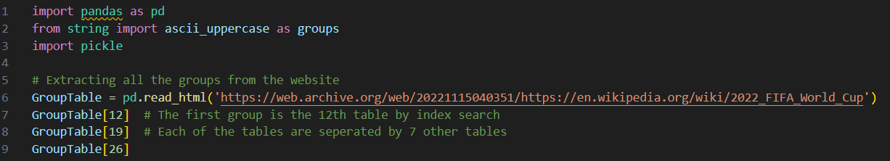
The tournament begins with a group stage, where 32 teams are divided into 8 groups. Four teams per group play a match against each other, and the top two teams move on to the next round. I extracted one of the 8 group standings from the Wikipedia page. There were several tables on the website, so I used indexing to find the required table.
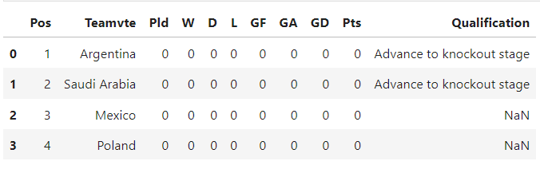
I then wrote a for loop to extract all the groups and place them within a dictionary, removing the ‘Qualification’ column, which was surplus to requirements.
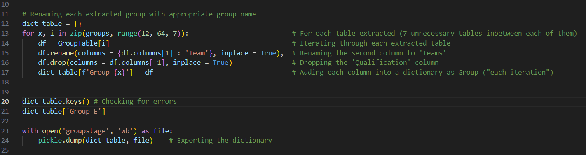
I exported the dictionary after checking for errors.
Organising the Data
I created a data frame containing all the previous World Cup editions (after several hours of extraction, I discovered that the 1990 page HTML was different from the others and brought in incomplete data). I used the BeautifulSoup package to scrape the data, extracting every match played within a single edition of the World Cup.
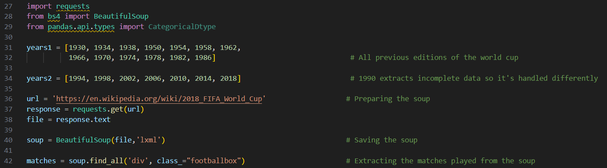
Next, I created empty lists to collect the extracted data based on the home team name, scoreline, and away team name. For each list, I created a for loop that iterated through all the games played in a single edition and appended the scraped data to its respective list. I saved the lists to a dictionary and then created a data frame from the dictionary.
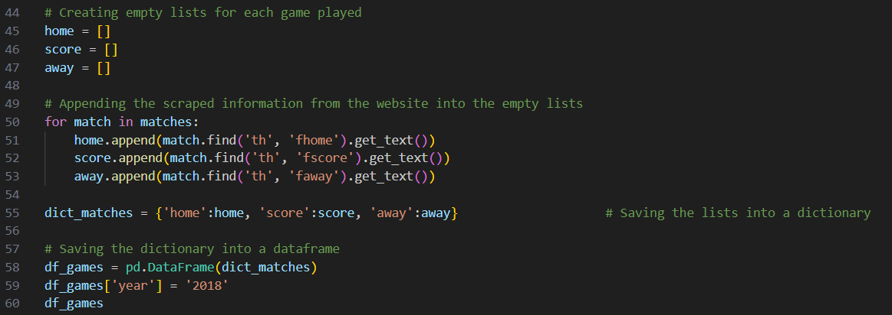
Simply put, I scraped all the games played at the 2018 World Cup (the latest edition), extracted the team names and score lines and saved them into a data frame.
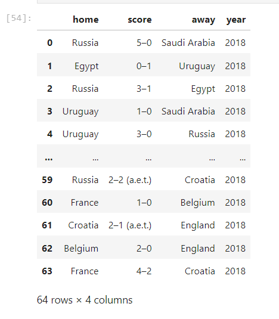
Seeing that the scraping was successful and error-free, I created a function that would iterate through every World Cup edition (2018, 2014, 2010, etc.), scrape the data, and save it into a data frame. Inside the function, I added a loop that would create a column and add the respective years to identify the games per year easily.
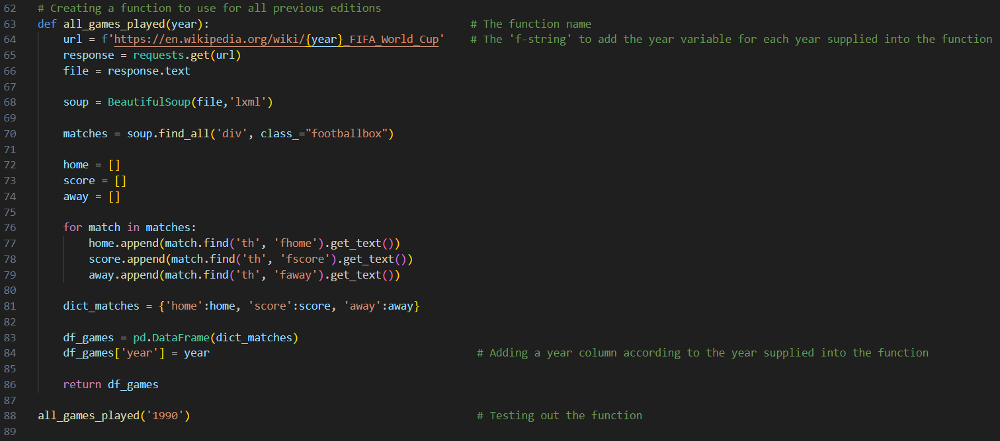
While revising the extracted data, I noticed a problem with the 1990 World Cup data. Only the knockout stage matches conformed to the scraping code. I had thirty-six matches missing (the group stages).
I had to think of the most efficient way to combine these thirty-six matches with the rest of the correctly extracted matches. After much googling and stack overflow, I manually entered the matches (not the most efficient way, but they seemed small enough to get done quickly).
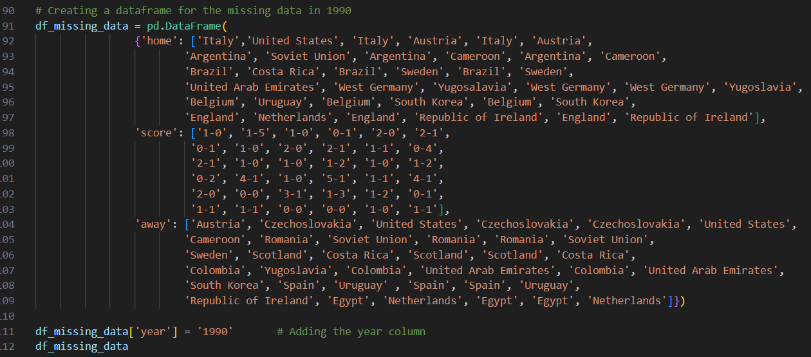
I had all the data I needed within different data frames, and the next step was to combine everything into a single data frame, which would be fed into the model.
I combined the missing 1990 data with the scraped knockout data.
I combined all the matches played before and after 1990.
I combined the matches played before 1990, the 1990 data, and those played after 1990 into a single data frame and saved it as a CSV.
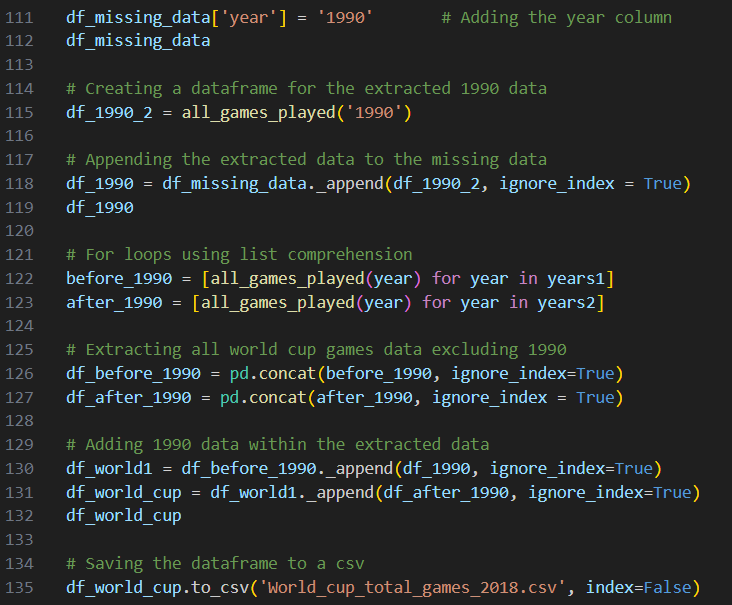
At this point, I had the tournament's group stage format and the data from all previous editions from which the model would learn, but something important was still missing: the fixtures. I needed to scrape the schedule for how all the matches would be played, from the group stages to the final.
I used the BeautifulSoup package within a for loop to extract this and saved it into a CSV.
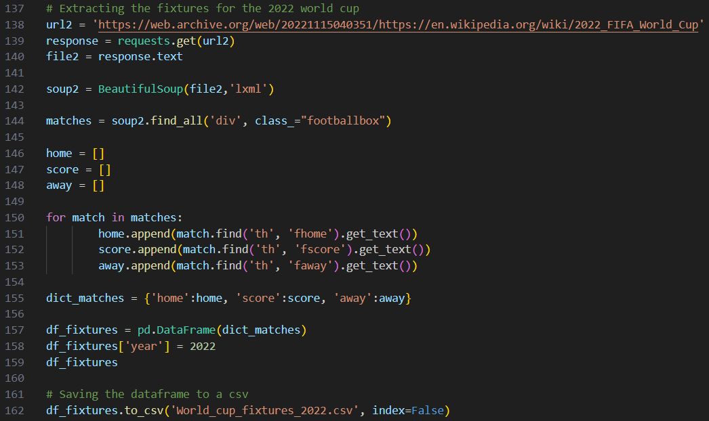
Cleaning the Data
I had the data I needed, but it still needed cleaning. I assigned the CSVs to new data frames and began cleaning (removing whitespaces, assigning appropriate names and datatypes, removing unnecessary information, etc.).
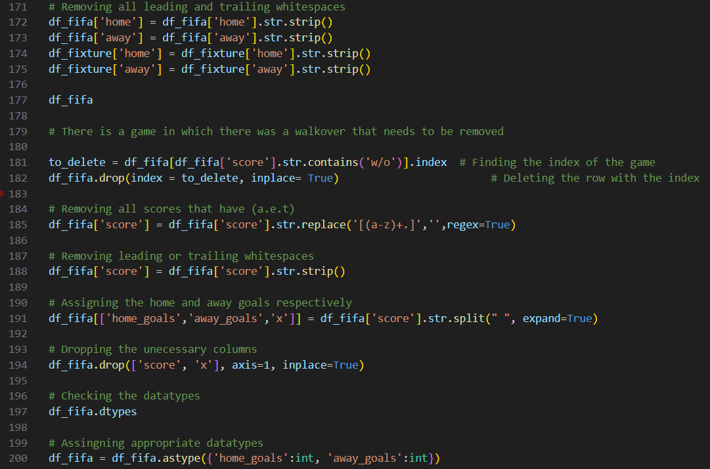
*I ran into an issue when trying to separate the score columns. For some reason, it refused to split appropriately. I imported the CSV into MS Excel, split it there and exported it back to the Jupyter Notebook*
I did a final check for all the data extracted and then saved it to another CSV.
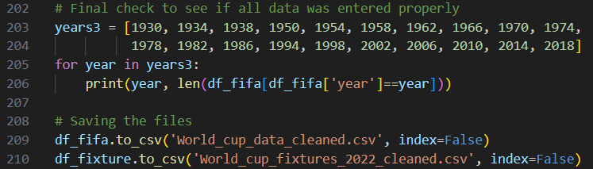
Building the Prediction Model
I had the group stage format, historical data and 2022 World Cup fixtures, and the next step was to feed in the data and build the prediction model.
I created data frames for home and away teams based on goals scored and goals conceded for every match played from the first edition to the last. From the resulting data frame, I calculated the average goals scored per team. I did this to reward teams that have consistently scored more over the period while training the model.
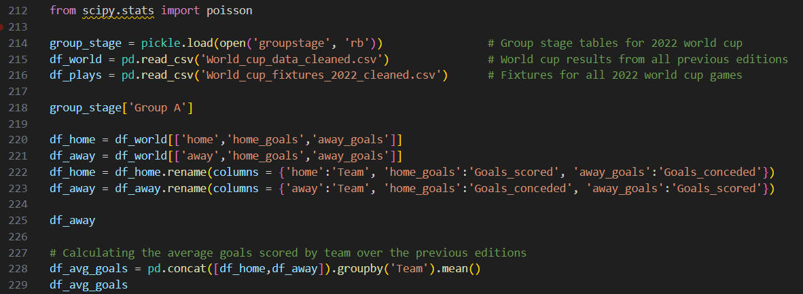
Next, I had to create the model.
This part took a lot of tweaks, review, YouTube and googling, but I finally got it done! I used the Poisson distribution as the event assumptions were correlating;
The events could be counted (matches to be played)
The occurrence of events is independent (Scoring a goal doesn’t directly affect the other team’s ability to score as well)
The rate at which events occur is constant (every match is 90 minutes)
No two goals can be scored at the same time in a match
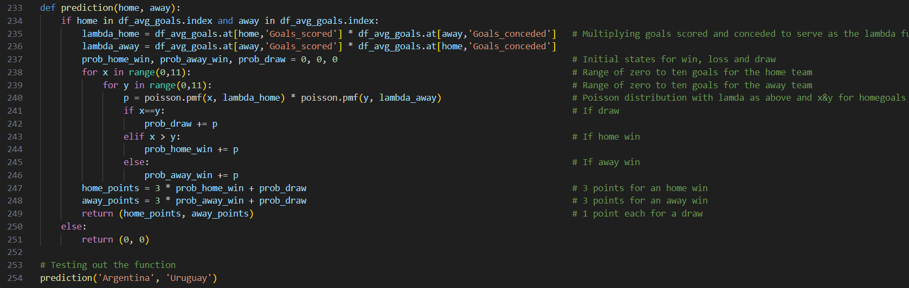
The Poisson package did most of the heavy lifting. I multiplied the goals scored and conceded for each home and away team, set 10 as the maximum number of goals that could be scored, and then inserted the values for x, y, and lambda. All variables were to begin from initial states of zero.
Lastly, the function would reward teams 3 points for a win and 1 point for a draw.
I tested the function, and it was working as designed. The final step in building the model was to structure the tournament as it was scheduled to run. I split the fixtures based on the group stages and knockout rounds.
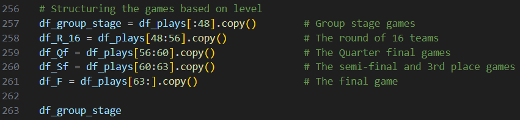
The Group Stage
Firstly, I extracted all team names and assigned them to a data frame, the first team being home and the second being away; I used the function to predict a game between such two teams, find the teams in the group stage format, assign points based on the result, and then reveal the points accumulated for each team. I wrapped this all up in a for loop so it iterates through every group and shows the final group standings.
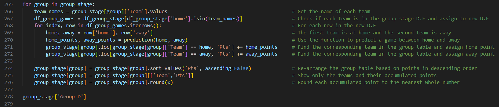
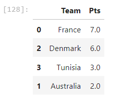
The Round of 16
According to tournament rules, the top two teams in each group progress into the Round of 16, while the bottom two teams are automatically eliminated.
The fixtures were already predetermined; I just needed to teach the model which team was first and which was second and assign their respective ‘names’ (group winner & runner-up).
I built another function that would serve all the knockout rounds. The function would predict each game, find the winner and add the winning team’s name to a new column called ‘winner’.
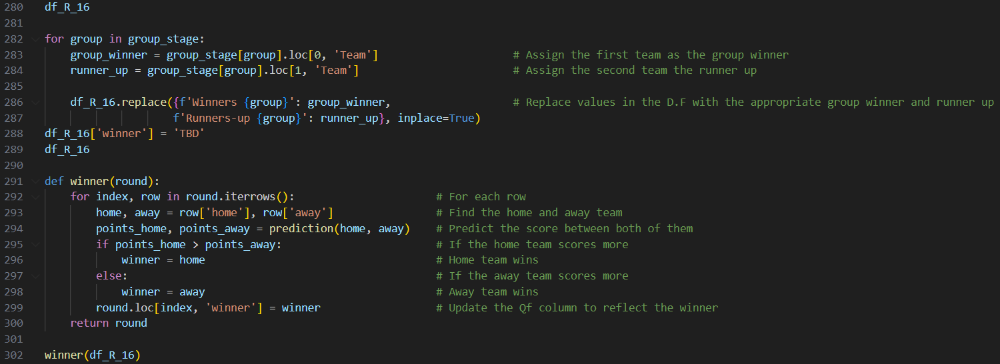
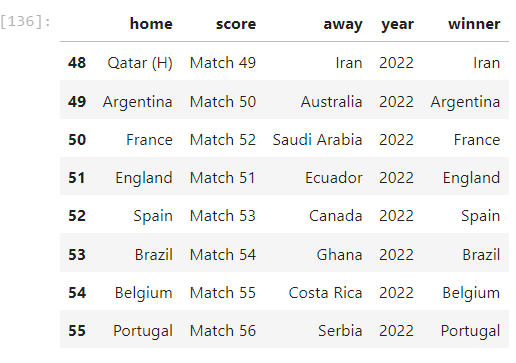
The Quarter-Finals
The next stages followed a repeated pattern, so I built a function that would serve all of them without writing extra lines of code.
The function was designed to extract the winning teams, use the match numbers to place the teams in the next stage as home or away and add a “winner’s” column.
I simply used the function I built earlier to simulate the matches and determine each winner.
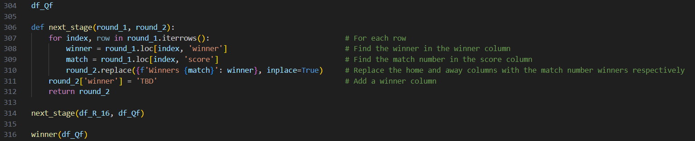
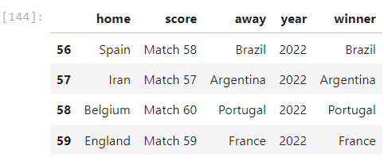
The Final Four
After all of that, Messi (Argentina) and Ronaldo (Portugal) were still within sight of the prize. The next lines of code were the easiest of the entire project to write. It was pretty surreal at this point. Would it actually play out like this? Would there be a Messi vs. Ronaldo final?
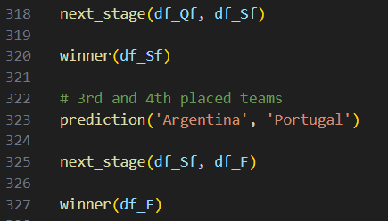
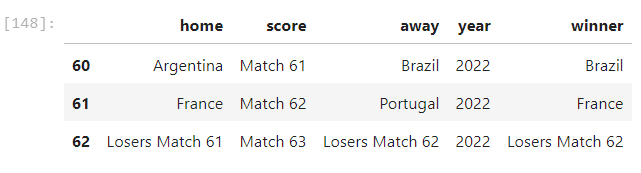
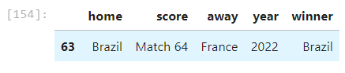
No.
Brazil Won.
(Based on historical data).
TL;DR
Football is played on the pitch by humans, which means predictions can never be accurate. However, there are always favourites and underdogs, and this is based on Data.
What I attempted to do here was use historical data to predict a future outcome based on a single question: “Who would win the highly coveted World Cup?”
Brazil won.
France was the runner-up.
Argentina took bronze.
Fortunately and unfortunately (however one wishes to look at it), football is played on the pitch, so we shall see if this prediction truly holds water.
Regardless, one thing is certain…I definitely spent too much time on this. Closes laptop and goes outside to touch grass
Overview
I created this project to mimic the needs and challenges of a local food business that deals in take-outs and deliveries.
"Alfredo's" is the fictional name I attributed to the business; I purchased the dataset as it was not readily available. It was created from an actual pizza delivery business, but the names and addresses were replaced and randomised to protect names and likenesses.
The dataset consisted of three Excel files containing information about the orders delivered, stock and inventory, and staff information.
Research Questions
As there were three books containing different kinds of information, several questions could be asked. I went through each of the books and penned down the following as potential needs that such a business would require:
Orders Activity
Revenue by pizza type
Orders/sales by hour
Orders by location
Total orders and sales
Quantity of items sold
Stock control/ Inventory management
When to order new stock?
What ingredients go into making each menu item?
How much does it cost to make each menu item?
Existing stock level?
Staff Management
Work times for each staff
Pay-per-hour
Total amount of wages being paid
The total amount of working hours
Data Wrangling
I began by normalising the data. I broke down each of the three main tables (Orders, Stock and Staff) into smaller tables, with their appropriate data grouped.
Given I was going to query the data via SQL, I had to visualise the schema and assign appropriate primary and foreign keys. Below is the schema I used while normalising the data.
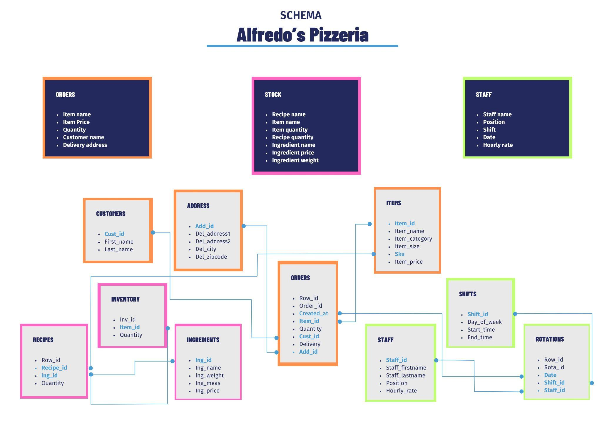
Data Querying
Given that I was working locally, I had to manually create each table in the Postgresql database and then import the data within the table from the CSV files, which I had converted from Excel format.
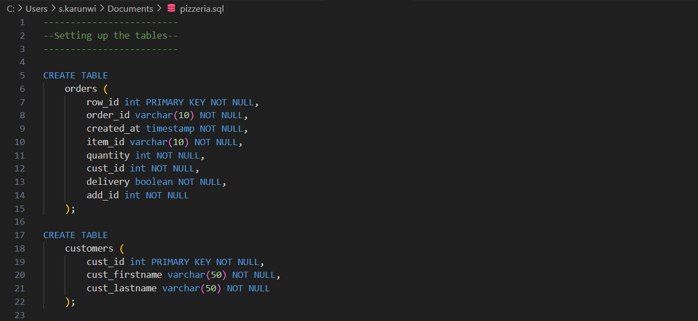
Next, I began writing the queries to extract the needed information based on my business questions.
The first query was to connect the orders, items and address table. The resulting table provided data from which I could easily extract the significant metrics that would form the dashboard for Order activity.
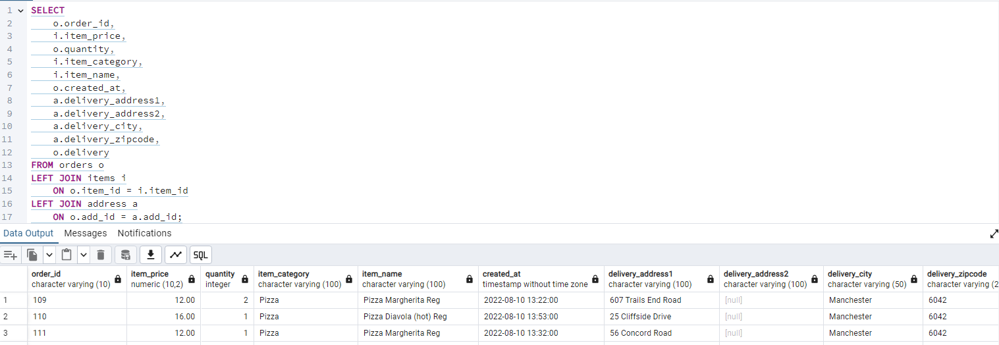
Satisfied with the results, I began querying for the inventory management dashboard. Looking through the schema, I knew I had to use a subquery(s) to get what I wanted.
I wrote my first query for the number of orders per available item on the menu. I did this by connecting the orders table to the items table.
Next, I broke down each item ordered by the ingredients that went into preparing it. Three tables were connected to this query: Items, Recipes, and Ingredients.
The primary metrics were set in the resulting table; however, I needed to add calculated columns based on the business questions. With the table mentioned above as a subquery, I added calculated columns describing the ordered weight of each item, the unit cost of each ingredient, and the total ingredient cost. The resulting table solved most of the business questions about stock control.
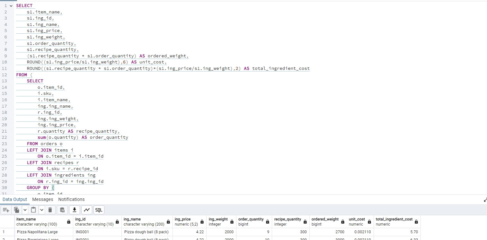
I still needed data for the remaining stock amount based on the total weight ordered and prior inventory amount. I saved the earlier table as a view and queried off of it.
I queried for the ordered weight and used this as a subquery to join with the Inventory table. From the resulting table, I queried for the total inventory weight before sales began and the weight left after sales were made in the period.
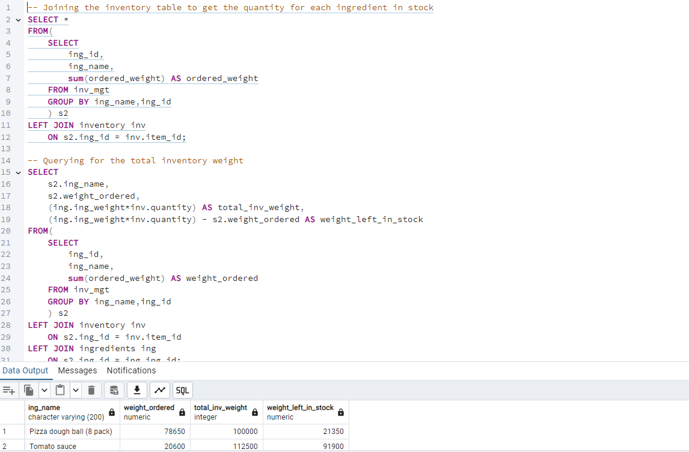
The data in the resulting table was sufficient to answer the remaining questions about Inventory management.
The last table required was to answer the questions relating to staff management.
It was straightforward as I needed to write a query to connect the three tables with staff information: Staff, Rotations and Shifts. Within the query, I added two calculated columns for hours worked (hours_in_shift) and wage bill for each staff based on hours worked (staff_cost).
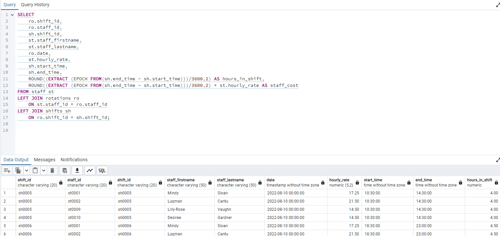
Data Visualization & Insights
The queries were done, and I had the tables I needed to create a dashboard for business stakeholders. I connected PostgreSQL to Power BI to develop the needed dashboards.
I extracted the four tables I needed to complete the dashboard: Orders activity, Stock 1&2, and Staff cost. I made a few rectifications to clean up each table, such as changing the column names, ensuring each column had the correct data type, splitting columns to normalise the data, etc.
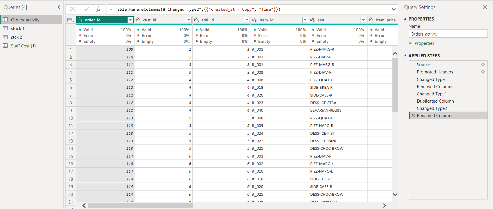
Most of the heavy lifting had been done in PostgreSQL, and the dashboards didn't take too long to set up. I created four measures to help with the aggregation: Average order value, Total sales, Total hours worked, and Total staff cost.
Dashboard 1 - Orders Activity
The first visuals were cards conveying total aggregations within the period. Number of customers serviced, Revenue generated, items sold and Average value per order.
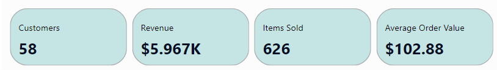
Next, I created a pie chart to show the sales by category (pie chart because it's a pizzeria, and I was highlighting pizza sales). The doughnut chart was used for the percentage per order type (doughnut chart to reduce the data-ink ratio), and finally, a bar chart to show the sales made per pizza item on the menu. I made the following inferences:
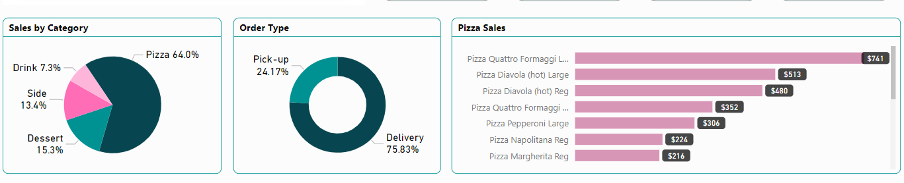
Unsurprisingly, Pizza's were bringing in over 60% of the revenue
Customers ordered more desserts than sides
The Pizza Quattro Formaggi Large was the top-selling pizza with over $200 worth of sales over the second favourite - Pizza Diavola (hot) Large.
The fifth visual was a line graph to display the number of orders against the number of sales made for every working hour within the period. The last visual was a map showing the location of each order that was made. I was able to infer the following:
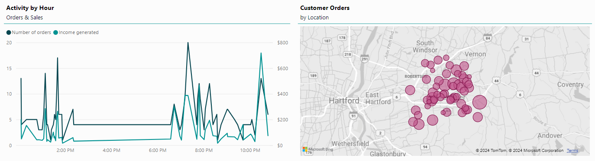
The working hours were between 12:00 to 23:00
Peak working hours were 13:00, 19:00, and 22:00
All orders came from the Manchester area in Connecticut, United States
Most of the bulk orders came outside the Manchester centre
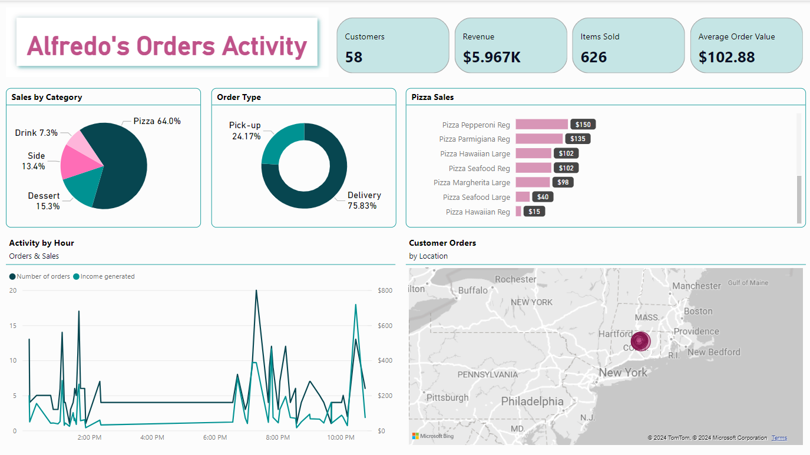
Dashboard 2 - Inventory Management
The first visual was a card which displayed the total amount it cost to make all orders within the period regarding ingredients.
The second visual was a table displaying each ingredient by name, the quantity used to prepare orders, the total cost of each ingredient used, and the percentage left in stock. I used a colour code to quickly identify the ingredients that needed replacement - red (<30% left in stock), pink (<50% left in stock, and no colour (>50% left in stock).
The third visual was a multi-row card with every item on the menu and the amount it costs to prepare. Clicking on each item modified the ingredient table to show only the ingredients required to make the highlighted item. I inferred the following:
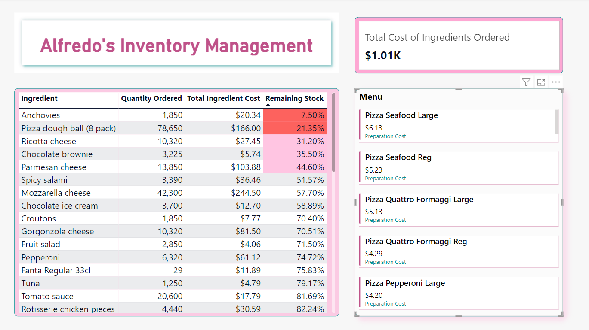
Anchovies and the Pizza dough ball (8 pack) needed immediate restocking.
The Pizza Seafood Large was the most expensive item to make on the menu.
Although the Pizza dough ball was used the most, the mozzarella cheese took the most chunk out of the business pockets; it accounted for almost 25% of the total ingredients cost.
Dashboard 3 - Staff Management
The first visual was two cards that displayed the aggregation for the total wage bill for the period and the total hours worked for the field staff.
The second visual was a multi-card row showing the working hours of each staff for the period.
The third visual was two doughnut charts that showed the wage bill per field staff member and the total number of hours worked.
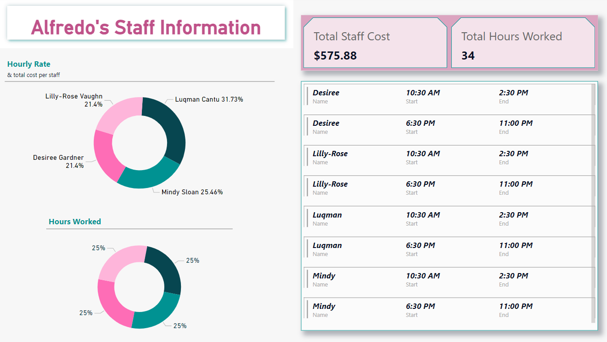
Conclusions
I was able to draw the following conclusions based on the initial business questions:
The Pizza Seafood Large is the most expensive to make and only brought in $40 from 2 customers within the period, second only to the Pizza Hawaiian Regular, the least-selling pizza item.
Most orders were recorded at 19:00, which is generally dinner time at the average home, 22:00, which could mean it was the last resort if people could not decide what to have for dinner, and 13:00, usually lunch break at most organisations.
Generally, small orders were recorded close to the city centre, and the more significant number of orders were recorded by individuals staying farther from the city centre.
The Pizza dough ball (8-pack) and Anchovies were being run through a lot quicker than any other ingredient and needed to be ordered in large quantities compared to other ingredients.
Most of the ingredients were still way above 50% in stock.
All the field staff were working two shifts and working the same hours. However, Luqman Cantu's pay rate was significantly higher than the rest of the staff members.
Overview
AtliQ Technologies is a software company in Vadorada, India. It provides consultation services to help technological businesses upscale.
The human resources manager reached out with a dataset containing attendance information for each staff member within the company. The dataset was an Excel file and had four tables:
Three tables containing daily attendance within 3 months
One table which had the attendance key for the three other tables
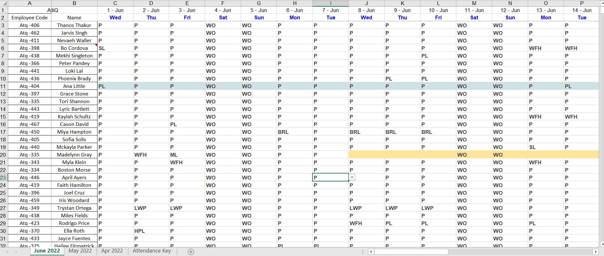
Fig 1.1. Dataset preview in MS Excel
The dataset had 86 rows and 45 columns spanning April - June 2022.
Research Questions
The final deliverable needed was an automated dashboard that combined the three months and could update accordingly with newly added data. The following questions were to be answered via the dashboard:
Working Preferences: if people prefer to work from home or work on-site
Attendance Information: which day is a majority of the staff present in the organization
Sick Leave Percentage: how many people are taking sick leaves, and how often do they take it
Leaves Percentage: how often are people going on leave, and how many of them are unforced
Data Cleaning
I previewed the dataset on MS Excel; the first thing that really stood out was the structure. It was in a wide format with 45 rows. This would be a problem as it was human-readable but would be a tall order for the computer to read.
Each column had the attendance per day and then the totals for each attendance type. I also saw that the data had several missing values after June 19th and could potentially throw errors if included.
I loaded the dataset into power query and began the cleaning.
Given that the dashboard should update automatically for future data, the cleaning had to be automated, and this was a headache because each of the 46 columns had different header names across the three sheets.
After some googling, I combined the sheets into one (the fourth sheet was the attendance key and neededn't be combined, so I filtered it out).
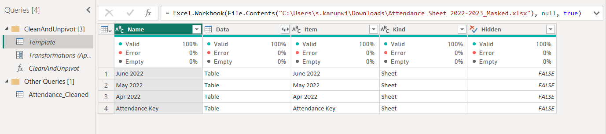
Fig 1.2. The single table containing all the sheets
I created a copy of the combined table and removed all other tables and columns besides the April column containing the attendance data. This was to serve as a template, where I cleaned up the table and stored the steps taken as a function that I would use to automate the same procedures on the other tables.
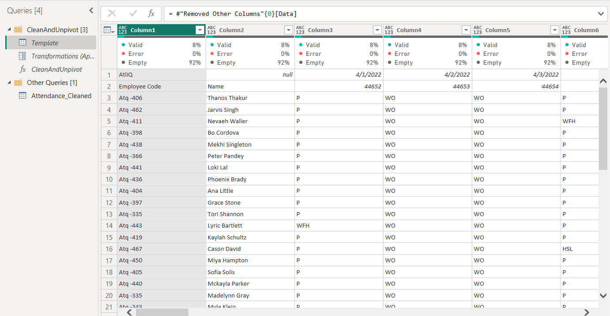
Fig 1.3. April table before cleaning
I removed the second row with irrelevant data and set the column headers appropriately.
I unpivoted the columns with daily attendance information and corrected the data type.
I renamed the column headers appropriately.
I corrected the errors that were thrown up due to the total columns (they were inconsequential).
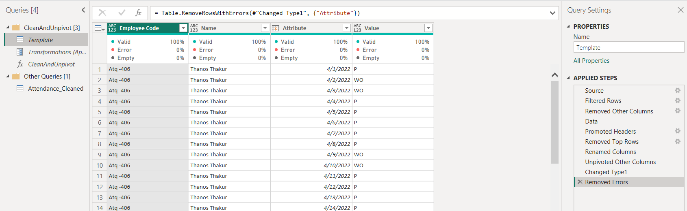
Fig 1.4. April table after cleaning
Once the cleaning was done, I created a parameter based on all the steps taken. I inserted the parameter into the Applied Steps section of the template table by filtering the rows with it to serve as a test to see if it worked as expected.
As mentioned earlier, I then created a function from the template table with the parameter set to filter its rows.
I reverted to the main table, which contained all the attendance information, and created a new column by invoking a custom function (which was the function I had made).
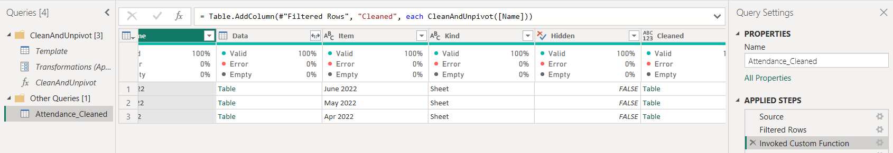
Fig 1.5. A new column (Cleaned) based on a custom function
I previewed all the newly created tables to check for errors and corrected a couple that resulted from the custom function.
I expanded the newly created column, formatted column names appropriately, removed unnecessary columns, and had a final combined table with unpivoted columns ready for analysis. I loaded it into Power B.I.
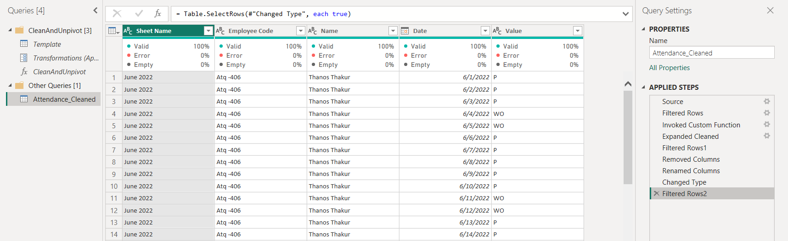
Fig 1.6. The final table for analysis
The Analysis
The attendance Key was integral to the analysis; the meaning of each key was defined as:
PL (Paid Leave), SL (Sick Leave), HPL (Half-day Paid Leave), HSL (Half-day Sick Leave), WFH (Work From Home), FFL (Floating Festival Leave), HFFL (Half-day Floating Festival Leave), BL (Birthday Leave), LWP (Leave Without Pay), HLWP (Half-day Leave Without Pay), BRL (Bereavement Leave), HBRL (Half Bereavement Leave), HWFH (Half Work From Home), WO (Weekly Off), HO (Holiday Off), ML (Menstrual Leave), HML (Half day Menstrual Leave).
I had to create measures to aggregate the data to answer the prevailing business questions. I created five (5) base measures:
Total Working Days
Total Present Days
Total Remote Work Days
Total Days on Leave
Total Days on Sick Leave
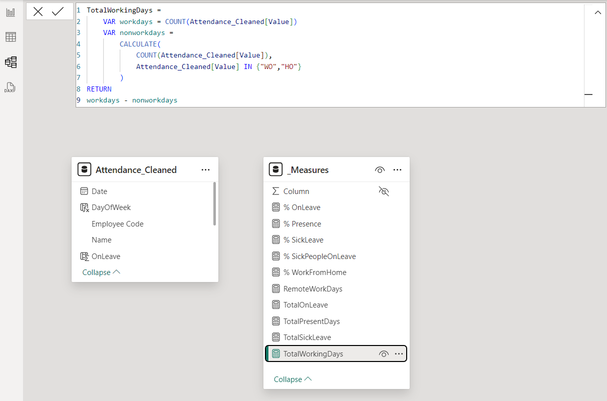
Fig 1.7. The table containing all created measures
I also created measures that calculated percentages based on the base measures. I created five (5) of them:
Percentage of Persons Present on a given day
Percentage of Persons Working Remotely
Percentage of Persons on Leave
Percentage of Persons on Sick Leave
Percentage of Sick Persons on Leave
During the process of creating these measures, I also created calculated columns within the main table of data:
Work From Home Count: based on the data, some people worked remotely for half a day, and this needed to be considered when calculating the number of persons present on a given day
Sick Leave Count: accommodating those who took a half-day sick leave
On Leave: aggregating everyone who took a type of leave on a given day
Day of Week: based on the date column, the name of each working day
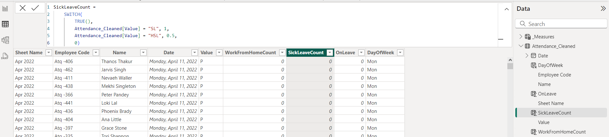
Fig 1.8. Calculated columns created to aggregate data
Visualizations
The first visual(s) I created were four (4) dynamic cards that displayed the percentages of those who were present, Worked Remotely, Were on Leave, or Were on Sick leave.
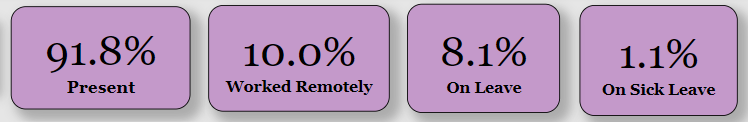
Fig 1.9. Dynamic cards
The cards, by default, showed the percentages for the three months. I then created a slicer to filter for each month.
The second visual was a table that displayed each member of staff's presence, percentage of time spent working remotely, and percentage of time spent on sick leave. This table was created to provide further information about each individual staff member's working preferences.
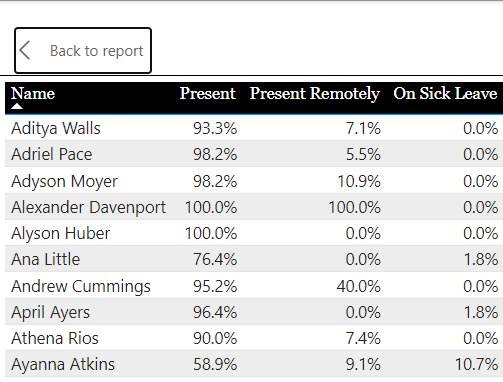
Fig 2.1. A table containing presence insights for each member of staff
The third visual was a treemap containing information about the number of people on leave per month per type of leave taken. This visual was created to answer the Sick Leave Percentage business question: to view the number of people who took leave, the kind of leave they took, and whether it was sick leave.
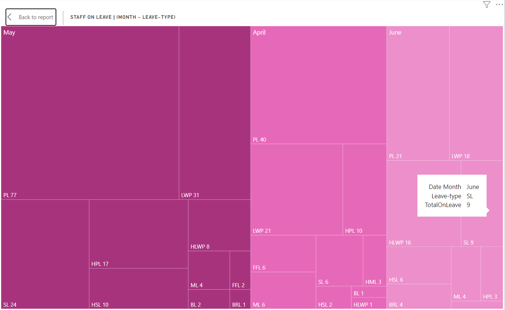
Fig 2.2. Treemap showing the number of people on leave per month per type of leave
The fourth visual(s) were three (3) stacked area charts showing the monthly trends for Attendance Information concerning staff presence, remote work, and sick leave. This visual provided information on how attendance changed, how much remote work had grown or fallen, and how often people took sick leave.
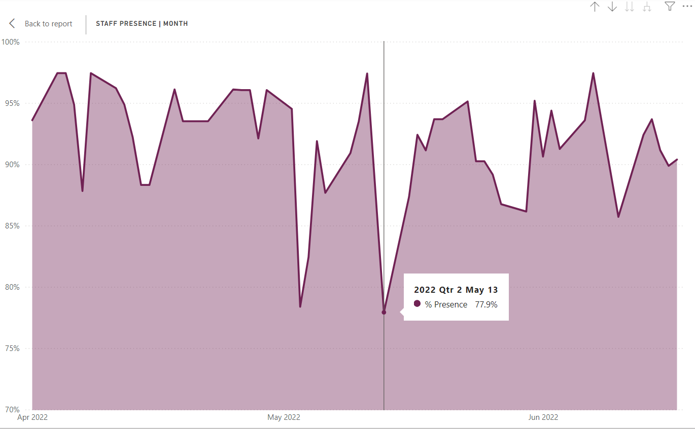
Fig 2.3. Stacked bar chart showing the staff presence trend over three months
The final visuals for the dashboard were three treemaps accompanied by the stacked area charts. These visuals showed the daily percentages of staff presence, remote work, and sick leave. They addressed the business question of Attendance Information by showing the days when people showed up the most.
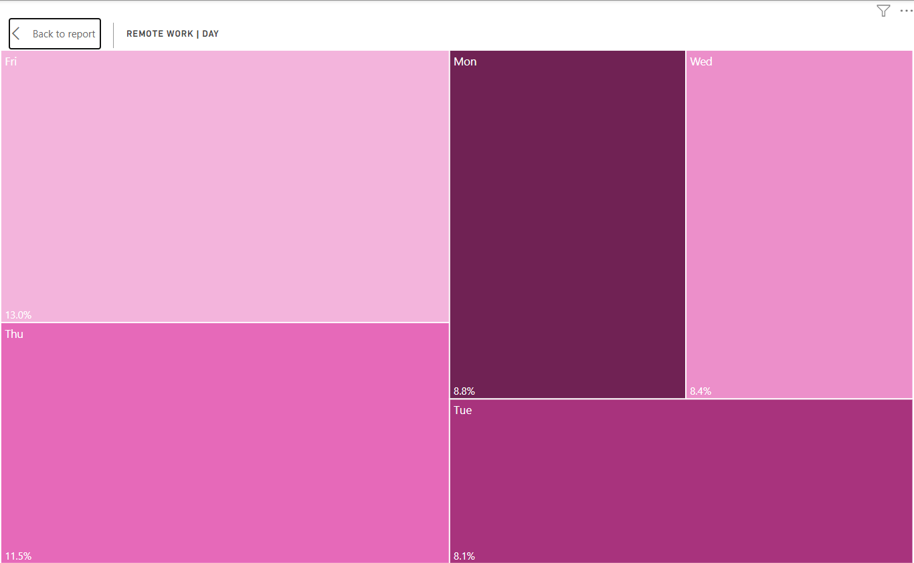
Fig 2.4. Treemap showing the daily percentages of people working remotely
Insights and Conclusions
Fig 2.5. Final Dashboard
People are showing up regularly, and no drastic decisions regarding staff presence on regular working days are needed.
Compared to the other two months, many people took leave in May, most of which were paid and unforced. It would be interesting to dig a little deeper into the external/internal events/circumstances during May that contributed to these decisions.
Sick leave percentages were low and did not indicate anything to worry about.
People preferred to work remotely on Thursdays and Fridays (no surprises there).
On-site work was preferred over remotely, and people showed up the most on Mondays.
Tuesdays in June had an average of 96% staff presence and should be the primary target day for any team-building activities or company-wide memos.
Overview
“Big Love” is a fictional company name I assigned to the dataset. A wholesale company that sells coffee beans in kilogram packages to individuals. It comprised coffee bean sales made to customers across three countries over four years. It was, however, a real-life dataset with altered names and addresses to protect client information.
Downloaded from a Github repository, I opened it up on MS Excel, and it had three tables:
Orders contained information about each coffee bean order made within the period. It had five (5) columns and one thousand (1000) rows. It had two unique identifiers (Customer ID and Product ID) that could connect to the other tables.
Fig 1.1. Pre-cleaning Orders table showing first ten rows
Customers: this contained information about each customer who made a coffee bean purchase within the period. It had nine (9) columns and one thousand (1000) rows.
Fig 1.2. Pre-cleaning Customers table showing first ten rows
Products: It contained information about each coffee bean available during the period. It had seven (7) columns and forty-nine (49) rows.
Fig 1.3. Pre-cleaning Products table showing first ten rows
Business Questions
In working on this dataset, I aimed to replicate a real-life scenario where a small-medium scale business could view its year-on-year data and identify key insights for growth and strategy.
After previewing the dataset, I knew I needed to merge the information in the three tables into one, which would be the basis for the dashboard.
I identified the following as key insights that would be valuable to stakeholders within the business:
Total Sales by Country: The dataset covered three countries, so I could identify the countries generating the most revenue and the gap between them.
Sales over Time: crucial for every business, I wanted to analyse the sales numbers over the three years of sales to view how profitable the company has been
Customer Insights: I wanted to view the top purchasing customers and the volume with which they order coffee beans.
Loyalty: since there was a column showing if each customer had a loyalty card, I decided to check if returning customers had the card and were purchasing in high volumes and if those who did not have the card were one-off customers.
Product Insights: I wanted to view the product generating the most revenue regarding roast type and bag size.
Data Cleaning
First, I needed to grab all the data from the three tables into one. I started by identifying the data I needed based on the business questions. I created seven (7) columns on the orders table: Customer Name, Country, Loyalty Card, Coffee Type, Roast Type, Size, and Unit Price. Each of the columns was from the other two tables.
Fig 2.1. Orders table with additional column headers
The first three columns were from the Customer table. I used the XLookup function to bring in the data, with the Customer ID column as the unique identifier.
I repeated the function for the Loyalty Card and Country columns as well. I brought in three (3) columns from the Customer table: Customer Name, Country, and Loyalty Card.
The next columns were from the Products table. Instead of using the XLookup function for each column individually, I used the Index and Match function. Thereby capturing all the columns in one go. I arranged the columns identically to the arrangement in the Products table, so the formula worked effectively. I used the Product ID column as the unique identifier. I brought in four (4) columns from the Products table: Coffee Type, Roast Type, Size, and Unit Price.
I had the data I needed from the tables together on one table. However, I realised I needed extra columns for the analysis. I created three manual columns:
Sales: I multiplied the Quantity column by the Unit Price column to aggregate the total sale made to each customer
Coffee Type Full Name: I used the IF function to provide the full names of each abbreviated coffee type (I did a Google search to familiarise myself with the coffee types).
Roast Type Full Name: I used the IF function to provide the full names of each of the abbreviated coffee types
Finally,
I formatted the Unit Price and Sales columns to reflect the transaction currency.
I added the unit (kg) to the Unit Price column
I set the Order Date column to DD-MMM-YYYY.
Fig 2.2. Orders table after cleaning
Analysis & Visualizations
To analyse the cleaned table effectively, I had to create pivot tables.
Firstly, I converted the table to an actual table with columns and rows recognised by MS Excel, as evidenced by the Table Design ribbon, which showed up.
I converted the table to a pivot table and started to create pivot tables for analysis, and they include:
Sales over time: The first pivot table comprised the sum of sales based on each coffee type. This table shows the sales per coffee type for each month of each year within the period. Accompanying the table was a line graph showing the sales trend over the years within the period.
Fig 3.1. Pivot table showing the sum of sales per coffee type
Fig 3.2. Line graph showing coffee type vs. sum of sales over time
Sales By Country: The second pivot table comprised the sales per country within the period. Accompanying the table was a bar chart that displayed the country on the y-axis versus the sum of sales on the x-axis.
Fig 3.3. Pivot table showing the sum of sales per country
Fig 3.4. Bar chart showing the sum of sales per country in descending order
Sales By Customer: The third pivot table was created based on the sum of sales per customer. Accompanying the table was a bar chart which showed the top five (5) purchasing customers in descending order. Shout-out to Allis!
Fig 3.5. Pivot chart showing the sum of sales per customer
Fig 3.6. Bar chart showing the sum of sales per customer in descending order
Timeline and Filters: I created the dashboard to be dynamic and give the end-user options to filter for desired data; this meant adding filters and a timeline to drill down for specific information and select specific periods, respectively. I created three (3) filters: Roast Type, Size, and Loyalty Card. I made the timeline to cover the period of the data.
Fig 3.7. Sales timeline showing Dec 2021 to Dec 2022
Fig 3.8. Three filter cards for roast type, size, and loyalty card
Insights & Conclusions
Fig 4.1. Final dashboard containing all visualisations
By a considerable degree, the United States racked up the most sales, and it was obvious that “Big Love Coffee” was located in the United States of America.
2019 had sales fluctuate between the $100 - $400 mark, with June being the most profitable, hitting $681.
2020 started strong in Q1, with February recording the highest sales at $745. This, however, fluctuated throughout the year, with August & September having a major decline before recovering in October.
2021 saw sales gradually increase throughout the year. Q4 was the most successful, with sales between $150 and $600; September recorded the highest sale of $841.
2022 had consistent numbers between the 200 - 400 mark. However, the data cut off in August. There was a sharp decline in February, recording the lowest sale of the year at $91, just after January recorded a year-high $844.
Allis Wilmore was the top purchasing customer, with $317 spent over the four years. Interestingly, they only made purchases three times within this period, each with a high volume. The rest of the top five racked up numbers within touching distance of each other. The difference between the first and fifth was $39.
Four of the customers within the top 5 purchasing customers did not have a loyalty card; only Ben Dundregde had one and, unsurprisingly, had made a purchase the most times as well.
The 2.5kg bag was the top-selling bag. It had twice the amount sold in the United States than the second sold bag, the 1.0kg bag.
The Roast Type sales were similar. The Light roast type accumulated the most sales, followed by the Medium kind and then the Dark.
Overview
“Ivy Plant Inc.” is a fictional name I created to associate with the dataset. A large-scale company that sells three different groups of plants (indoor, outdoor, and landscape) to individuals and businesses worldwide.
The dataset mimics the operations of a real-life plant company with similar operations. I downloaded it from a GitHub repository.
The dataset is an Excel file containing three tables split up into three tabs:
Plant_FACT: This table contained sales invoices for the plants. It had a product I.D. and account I.D. column that could be connected with the other tables.
Accounts: Containing all the information about each specific account included in the sale of the plants. An Account ID column was the unique identifier for the table.
Plant hierarchy: This section had information about the products(plants). The products were assigned based on family, group, name, size, and type.
It contained 2000+ rows of data spanning three years (Jan. 2022 - Apr. 2024).
Research Questions
At first glance, the dataset was relatively clean and needed a few tweaks for analysis. I was able to identify the following as key insights that could be useful in a real-world scenario:
Total Sales: how much revenue was generated?
Total Quantity of Goods Sold: how much is being sold?
Gross Profit: There was a column with the cost of goods sold. This could be useful in determining how sustainable the current prices of goods are.
Year-To-Date & Prior-Year-To-Date: Apart from the total sales, it would be interesting to find out how well sales numbers compare with previous years within the same period. The data cuts off in the first quarter of 2024, so this insight could be useful to prepare and re-strategize if needed for the rest of the year.
Regional Performances: Each of the accounts and their locations was listed so I could view numbers from these regions to see how well each area was doing.
Account Profitability: Besides the regional performances, I could also view the accounts performing well in gross profit and those needing intervention.
Sales based on product type; what type of plants do customers buy more regularly?
Data Cleaning
As earlier mentioned, the dataset was relatively clean and only needed minor adjustments. To aid reproducibility, I performed these cleaning operations using Power Query.
I loaded the dataset into Power Query and performed the following operations:
Modified the Column names; a few were misspelled and inconsistent
Renamed the tables to reflect their contents appropriately
The Sales table was to be my Fact Table. Therefore, I identified the column on the other tables to be joined with the Fact Table and removed all duplicates.
I noticed null values on the Accounts ID column within the Accounts table and removed them as they were inconsequential and likely to throw errors.
Fig. 1.1 Final table after data cleaning
Satisfied with the final look, I loaded the three tables into Power BI.
The Analysis
Date Table
I created a DAX Date Table covering the dataset period (2022 - 2024). This was necessary for the Prior-Year-To-Date (P.Y.T.D) values.
Fig. 2.1. Date Table
P.s. I made significant progress in creating the visuals when I noticed inconsistencies and traced them back to the Date table. I had to create a calculated column, “InPast,” which cross-referenced the dates within the date table with the dates on the Fact Table and returned a ‘True’ or ‘False’ statement for each.
Base Measures
Then, I created the base measures that would run the dashboard. I created five of them, namely:
Cost of Goods
Gross Profit
Gross Profit Percentage
Total Quantity
Total Sales
P.Y.T.D & Y.T.D Values
Next were the measures for the Year-To-Date(P.Y.T.D) and Prior-Year-To-Date(P.Y.T.D) values. I identified the major metrics the dashboard was going to cycle between as:
Gross Profit
Sales
Quantity
Therefore, the P.Y.T.D and Y.T.D measures were created for each metric.
The dashboard was beginning to come together at this point, and I knew the visuals I wanted. I wanted to show each visual based on the three major metrics and all three on a single dashboard; I needed to create a slicer and switch between them:
Firstly, I created a table and inputted the three metrics (Gross Profit, Sales, Quantity) as a column called Values
I created the slicer based on the Values from the table
Then, I created the switch measures based on the slicer values
Fig. 2.2. DAX calculation for the PYTD switch measure
I created three switch measures;
Y.T.D (year-to-date values)
P.Y.T.D (Prior year-to-date values)
Y.T.D_v_P.Y.T.D (Y.T.D - P.Y.T.D)
Visualizations
I created each visual to buttress each of the initial research questions posed.
The first visual was a set of dynamic cards to show:
The total Y.T.D value served as the revenue generated for the fiscal year
P.Y.T.D: the revenue generated for the previous fiscal year within the same period
Y.T.D_v_P.Y.T.D; the difference in sales between the current fiscal year and the previous one
Gross Profit values for the given fiscal year in percentages
Each card showed the information based on the metric selected in the previously created slicer.
Fig. 2.3. Dynamic cards representing the base measures used in developing the dashboard
I created the second visual to view the Regional Performances at a glance.
I decided to use a clustered bar chart to view the underperforming regions. For each of the three major metrics, the visual showed the bottom 10 countries for the fiscal year in view.
Fig. 2.4. Chart showing the bottom 10 countries based on their Y.T.D sales against their P.Y.T.D sales
I created the third visual to address the difference in sales numbers between the current fiscal year and the previous one.
I went with a waterfall chart displaying the numbers per month and added drill-down options for Country and product type. At a glance, it was clear to see the difference in sales for each month compared to the previous year. Drilling down showed the countries responsible for the numbers and the products’ performances.
Fig. 2.5. Chart showing Y.T.D sales against P.Y.T.D sales per month for 2024
The fourth visual addressed the business question: what type of plants do customers buy more regularly?
I used a line and stacked column chart to examine the Y.T.D. and P.Y.T.D. values per quarter based on product types for the fiscal year. The columns represented the numbers for each plant type and the total aggregate for the period. The line represented the total P.Y.T.D. value aggregate for the same period. I included a drill-down option for individual months.
Fig. 2.6. Chart showing Y.T.D & P.Y.T.D sales based on months and product type for 2024
The final visual addressed Account Profitability.
I created a scatterplot that split the accounts into four quadrants based on their Y.T.D value and Gross Profit Percentage.
The top-left quadrant showed accounts with relatively high gross profit percentages but low numbers (sales and quantity)
The bottom left quadrant showed accounts with relatively low gross profit percentages and low numbers (sales and quantity)
The bottom right quadrant showed accounts with relatively high numbers but low gross profit percentages.
The top right quadrant showed accounts with relatively high numbers and high gross profit percentages.
Fig. 2.7. Graph showing account profitability segmentation based on gross profit percentages and sales
Insights and Conclusions
Fig. 3.1. Final Dashboard showing insights for Sales in 2023